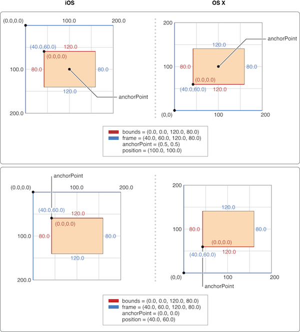

CALayer 子类
CATiledLayer
CATiledLayer为载入大图造成的性能问题提供了一个解决方案：将大图分解成小片然后将他们单独按需载入。
把大图片 切分成小图片。然后 按需加载 小图片。
CAScrollLayer
CATextLayer
使用 Core Text 绘制文本。
具体使用跟 UILabel 类似
textLayer.string = text;
textLayer.contentsScale = [UIScreen mainScreen].scale;
CAOpenGLLayer
CAEmitterLayer
高性能粒子引擎，用于创建 烟雾，火，雨等效果
CAGradientLayer
生成两种或更多颜色平滑渐变的layer
CAShapeLayer
通过矢量图形来绘制图层子类
CATransformLayer 是一个layer group，需要 addSubLayer
AVPlayerLayer
播放 视频的layer
https://blog.csdn.net/lxl_815520/article/details/51889674
模型
layer 内部维护着三分 layer tree,
- presentLayer Tree(动画树),
- modeLayer Tree(模型树)
- Render Tree (渲染树)
在做 iOS动画的时候，我们修改动画的属性，在动画的其实是 Layer 的 presentLayer的属性值,而最终展示在界面上的其实是提供 View的 modelLayer
在 View显示的时候，UIView 做为 Layer 的 CALayerDelegate,View 的显示内容由内部的 CALayer 的 display
每个 UIView 内部都有一个 CALayer 在背后提供内容的绘制和显示，并且 UIView 的尺寸样式都由内部的 Layer 所提供。两者都有树状层级结构，layer 内部有 SubLayers，View 内部有 SubViews.但是 Layer 比 View 多了个AnchorPoint
属性
frame boudns center position achorPosition
对于 UIView 的 frame，bounds，center 都比较熟悉：
- bounds 指定 UIView 自身坐标系
- center 指定 UIView 在 superview 中的位置坐标
- frame 由互不影响（正交）的 bounds 跟 center 生成。修改了 frame 后，会对应修改 bounds 或 center
anchorPoint position bounds frame

- anchorPoint 锚点，在图层旋转、缩放时的固定点 (transform)
- position 是图层的 anchorPoint 在父图层中的位置坐标
- 单独修改 position 与 anchorPoint 中任何一个属性都不影响另一个属性，修改其中一个值，受影响的只会是frame.origin
- anchorPoint 和 position 共同决定了 frame
- 同时修改了 anchorPoint 和 frame ，position 会对应修改
根据 anchorPoint 和 position 计算 frame：
frame.origin.x = position.x - anchorPoint.x * bounds.size.width；
frame.origin.y = position.y - anchorPoint.y * bounds.size.height；
position.x = frame.origin.x + anchorPoint.x * bounds.size.width；
position.y = frame.origin.y + anchorPoint.y * bounds.size.height；
anchorPoint 取值范围 [0, 1]
anchorPoint = CGPointMake(0, 0); 左上角
anchorPoint = CGPointMake(0.5, 0.5); 中心
anchorPoint = CGPointMake(1, 0); 右上角
anchorPoint = CGPointMake(0, 1); 左下角
anchorPoint = CGPointMake(1, 01; 右下角
Shadow
CAShapeLayer
https://juejin.im/post/5a01cf166fb9a0450908eb64
CAShapeLayer不需要像普通CALayer一样创建一个寄宿图形。而且是矢量图形，无论有多大，都不会占用太多的内存。
参考
- 中文文档：https://zsisme.gitbooks.io/ios-/content/chapter1/the-layer-tree.html
- http://kittenyang.com/anchorpoint/
- https://www.objc.io/issues/3-views/moving-pixels-onto-the-screen/
- https://blog.ibireme.com/2015/11/12/smooth_user_interfaces_for_ios/#32
- transform https://juejin.im/post/582757b95bbb50004f12ad9c